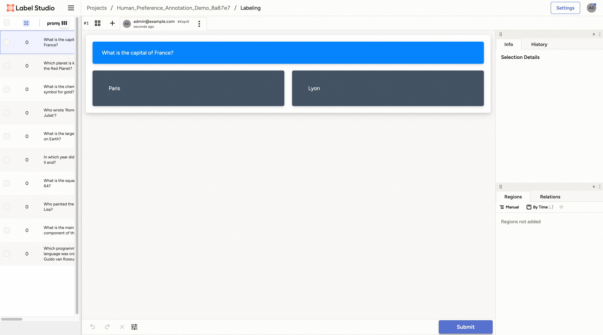

Data Processing
Overview
Trinity-RFT provides a unified data processor to process the raw dataset and experiences for the task pipeline and the experience pipeline.
For tasks, the data processing capabilities come from Data-Juicer. You can use data processing operators from Data-Juicer. The full list of Data-Juicer operators can be found here
For experiences, in addition to Data-Juicer operators, Trinity-RFT provides several RFT-related operators and allows developers to implement their own operators.
For implementing your own data processor, you can refer to this document.
To support the data processing of Data-Juicer and RFT-related operators, Trinity-RFT wraps the Data-Juicer operators into a unified service, which can be started automatically. The DataJuicerOperator uses a client to send requests of task or experience processing to the server.
An overview of the data processor is shown in the following figure.

Example: Data Processor for Task Pipeline
In this example, you will learn how to apply the data processor of Trinity-RFT to prepare and prioritize the dataset before task exploring and training. This example takes GSM-8K dataset as the example dataset to figure out:
how to prepare the data processor
how to configure the data processor
what the data processor can do
Before getting started, you need to prepare the main environment of Trinity-RFT according to the installation section of Quickstart,
and store the base url and api key in the environment variables OPENAI_BASE_URL and OPENAI_API_KEY for some agentic or API-model usages if necessary.
Besides, for starting the data processor server automatically, you also need to install the dependencies in the data split.
pip install -e ".[data]"
Configure the Data Processor
Trinity-RFT uses a unified config file to manage all config items. For the data processor, you need to focus on the data_processor section in the config file.
In this example, assume that you need to rank all math questions and corresponding answers by their difficulties. So you can set these config items like the following example:
data_processor:
# task pipeline related
task_pipeline:
num_process: 32
operators:
- name: "llm_difficulty_score_filter"
args:
api_or_hf_model: "qwen2.5-7b-instruct"
min_score: 0.0
input_keys: ["question", "answer"]
field_names: ["Question", "Answer"]
inputs: # the output will be set to the explorer input automatically
- /PATH/TO/GSM8K/DATA/FILE
target_fields: ["question", "answer"]
service:
data_juicer:
auto_start: true
Here you can set the input files for the GSM-8K dataset and some other items about task pipeline:
task_pipeline: the configs for the task pipeline. Task pipeline is used to process the raw dataset. It consists of several inner configs:num_process: the number of processes to use for the task pipeline.operators: the operators used in the task pipeline. All of them are Data-Juicer operators.inputs: the input files for the task pipeline. We usually load from raw dataset files in this pipeline. It allows multiple inputs.target_fields: the target fields in the dataset to process and be outputted to the result dataset files
It’s worth noticing that we don’t need to set the output path usually, cause it will be set to the path of the explorer input automatically.
The data processing of Data-Juicer is maintained as a service. Thus we need to config the data-juicer service.
Luckily, Trinity-RFT provides an auto-start way to start the data processor server automatically. All you need to do is to set the auto_start of data-juicer service to true in the service section.
All config items in the data_processor section can be found here. A prepared config file for this example of GSM-8K can be found in the config file.
Note
Only when one of xxx_pipeline is provided, and one of dj_process_desc and dj_config_path in the pipeline config is provided, the data processor and the data active iterator will be activated. Otherwise, this part will be skipped and it will enter into the exploring stage directly.
Exploring & Training
After preparing the config files of Trinity-RFT, you can start your ray cluster and run the RFT process including the data active iterator part with the following commands:
# start the ray cluster
# on master node
ray start --head
# on worker nodes
ray start --address=<master_address>
# run RFT
trinity run --config <Trinity-RFT_config_path>
If you follow the steps above, Trinity-RFT will send a request to the data processor server, the data active iterator will be activated, compute difficulty scores for each sample in the raw dataset, and rank the dataset according to difficulty scores. After that, the data processor server stores the result dataset into the output buffer, when exploring begins, it will load the prepared dataset and continue the downstream steps.
Example: Data Processor for Experience Pipeline
In this example, you will learn how to apply the data processor of Trinity-RFT to reshape rewards of experiences after exploring. This example takes GSM-8K dataset as the example dataset to figure out how to reshape rewards of experiences from the explorer before sent to the trainer from a view of the quality of generated responses.
In addition to the automatic way to start the data processor server in the previous example, you can also start it manually.
Before getting started, you need to prepare the main environment of Trinity-RFT according to the installation section of Quickstart,
and store the base url and api key in the environment variables OPENAI_BASE_URL and OPENAI_API_KEY for some agentic or API-model usages if necessary.
Data Processor Server Preparation
As the overall framework of Trinity-RFT shows, the data processor is one of the high-level functions. Trinity-RFT also encapsulates the data processor as an independent service to avoid implicit dependency conflict issues. Thus you can prepare a split environment for it and start the server manually using the prepared scripts.
# prepare split environments, including the one of data processor
python scripts/install.py
# start all split servers
python scripts/start_servers.py
These scripts will create split environments for Trinity-RFT and Data-Juicer-based data processor. Then it will start the data processor server automatically in the Data-Juicer environment.
Configure the Data Processor
In this example, assume that you need to add an extra reward item to the experiences outputted by the explorer, which access the quality scores of the experiences. So you can set the experience_pipeline config like the following example:
service:
data_juicer:
server_url: 'http://127.0.0.1:5005'
port: 5005
data_processor:
# experience pipeline related
experience_pipeline:
operators:
- name: data_juicer
args:
config_path: 'examples/grpo_gsm8k_experience_pipeline/dj_scoring_exp.yaml'
- name: reward_shaping_mapper
args:
reward_shaping_configs:
- stats_key: 'llm_quality_score'
op_type: ADD
weight: 1.0
save_input: false
Here you can set the information of the started data processor server.
Different from the previous example, which starts the server automatically,
here you need to set the server_url and port manually according to data processor service started in the previous step.
For the data processor part, you need to config the experience pipeline and some other items about reward shaping:
experience_pipeline: the configs for the experience pipeline. Experience pipeline is used to process the experiences outputted by the explorer, such as reward shaping, data filtering and augmentation. It consists of several inner configs:operators: the operators used in the experience pipeline.Here we use a “data_juicer” operator to compute extra stats and use a “reward_shaping_mapper” operator to reshape rewards according to the computed stats.
The actual configs for the “data_juicer” operator are stored in another file “examples/grpo_gsm8k_experience_pipeline/dj_scoring_exp.yaml”, which will be introduced later.
save_input: whether to save the input experiences to the disk. Here we set it to false for simplicity.
In default, the experiences are generated by the explorer and sent to experience pipeline. After processed, they are outputted to the trainer. So we don’t need to set the input and output buffers for the experience pipeline usually.
In addition, there are several config items for data-juicer operator in experience_pipeline part, which is used to compute stats used to reshape rewards. The data-juicer config used here is:
# This is a Data-Juicer data processing recipe
project_name: 'gsm-8k-experience-quality'
np: 32
process:
- llm_quality_score_filter:
api_or_hf_model: "qwen2.5-32b-instruct" # use "qwen2.5-32b-instruct" to calculate the quality scores.
min_score: 0.0
input_keys: ["prompt_text", "response_text"] # set input_keys and field_names to the existing key names in gsm-8k. Here calculating the difficulty scores according to both questions and answers.
field_names: ["prompt", "response"]
All config items in the data_processor section can be found here. A prepared config file for this example of GSM-8K can be found in the config file.
Exploring & Training
After preparing the config files of Trinity-RFT, you can start your ray cluster and run the RFT process including the data active iterator part with the following commands:
# start the ray cluster
# on master node
ray start --head
# on worker nodes
ray start --address=<master_address>
# run RFT
trinity run --config <Trinity-RFT_config_path>
If you follow the steps above, Trinity-RFT will send a request to the data processor server and prepare the experience pipeline. It will watch the explorer output buffer. Once there is a new batch of experience, the data processor will compute stats for the experience and reshape the rewards. Then it writes the reshaped experience to the trainer input buffer for training.
Example: Human in the Loop
Sometimes, you might need to involve human feedbacks for some raw data. In this example, you will learn how to annotate raw data to get a better dataset before training. This example takes an example Q&A dataset and tries to select the chosen and rejected ones for DPO method.
Before getting started, you need to prepare the main environment of Trinity-RFT according to the installation section of the README file, and start a label-studio server from Data-Juicer from source.
In this example, we start the data processor server manually. Thus, you need to install the dependencies in the data split.
pip install -e ".[data]"
Configure the Data Processor
Trinity-RFT uses a unified config file to manage all config items. For the data processor, you need to focus on the data_processor section in the config file.
In this example, assume that you need to select the chosen and rejected responses for DPO method. So you can set these config items like the following example:
data_processor:
# task pipeline related
task_pipeline:
num_process: 1
operators:
- name: "human_preference_annotation_mapper"
args:
# general annotation project settings
project_name_prefix: "Human_Preference_Annotation_Demo"
wait_for_annotations: true # Whether to wait for annotations to complete
timeout: 3600 # Maximum time to wait for annotations in seconds (1 hour)
poll_interval: 10 # Time between annotation status checks in seconds
max_tasks_per_batch: 10 # Maximum number of tasks in a single batch
notification_config:
enabled: false
# label studio connection settings
api_url: "http://localhost:7070" # Default Label Studio URL
api_key: "YOUR_API_KEY" # Your API key for label studuio authentication, which can be set when starting the label-studio service
# human preference annotation settings
prompt_key: "prompt" # Prompt field
answer1_key: "answer1" # First answer option
answer2_key: "answer2" # Second answer option
chosen_key: "chosen" # Chosen field
rejected_key: "rejected" # Rejected field
inputs: # the output will be set to the explorer input automatically
- /PATH/TO/DATA/FILE/TO/BE/ANNOTATED
target_fields: ["prompt"]
service:
data_juicer:
auto_start: true
Here you can set the basic information for the example dataset and some other items about the input dataset, which is similar to the example above.
The difference is that we use the data-juicer OP human_preference_annotation_mapper here. This OP helps you to annotate the data with human preference on a UI.
You can set more config items for this OP (e.g. notification when annotation is finished). For more details, please refer to this doc.
Start Running
When you start running with the RFT config, the data processor will start the OP human_preference_annotation_mapper, and then you can find a new project on the “Projects” page of the label-studio server.

You can click and enter into this project, and all the samples that need to be annotated are listed on the page.

Then you can click any sample and you will enter the labelling page.

For the preference annotation case, you can choose the preferred/right/chosen one and then click the “Submit” button to submit the annotation result. Then you can select other samples and continue this process.

After all samples are annotated, the OP will end automatically and store the result dataset in the target database specified by the config file. When training begins, it will load the prepared dataset and continue the downstream steps.